Torre 7 · Versiones del sitio
Propuestas de diseño para el sitio web de Torre 7 Soluciones Integrales. Todas incluyen Red de ESAL y Blog. Haz clic en una para abrirla.
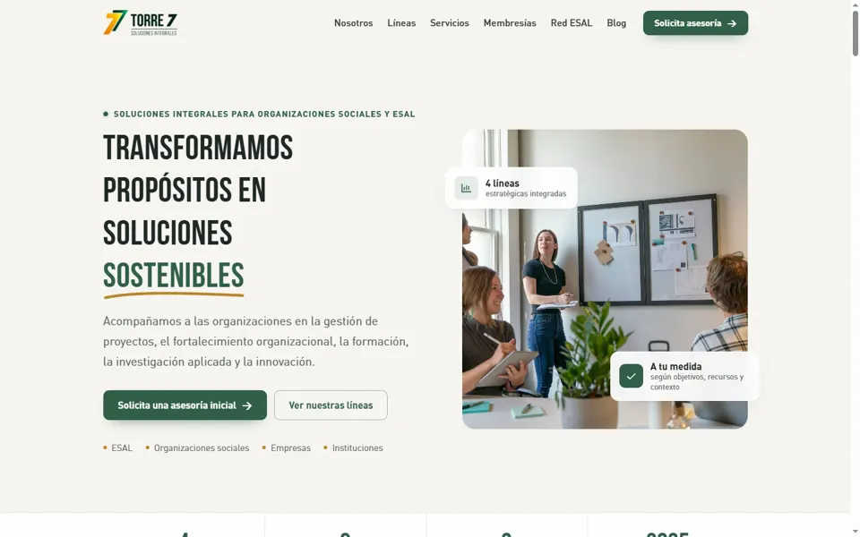
11 · Sobria Plus
Sobria y fácil de leer, con acabados finos y animaciones suaves: títulos que aparecen, fotos con barrido y detalles elegantes.
htdocs/torre7-sobria-plus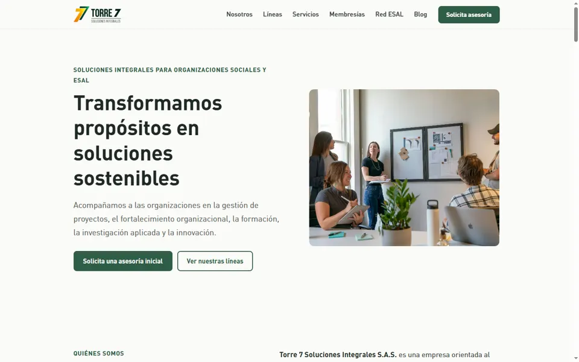
10 · Sobria
Colores neutros y lectura fácil: letra grande, textos cortos y diseño sencillo, sin distracciones.
htdocs/torre7-sobria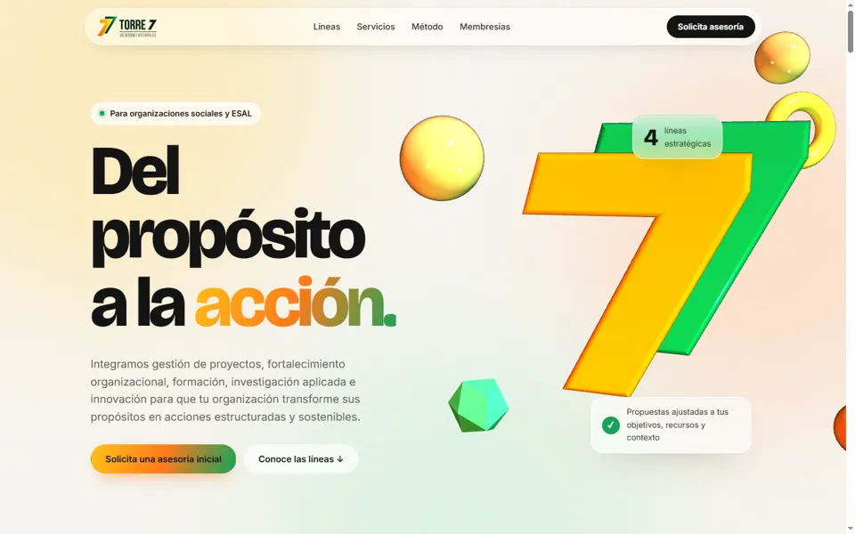
9 · Cristal 3D
Clara y luminosa: 7 sólido en 3D con brillo real, viaje 3D por las líneas, vidrio esmerilado y camino que se dibuja.
htdocs/torre7-cristal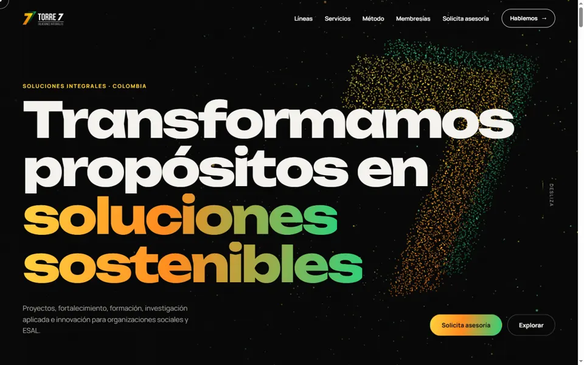
8 · Motion
Animación de alto impacto: 7 de partículas 3D, precarga, cursor, tarjetas apiladas, scroll horizontal y pie revelado.
htdocs/torre7-motion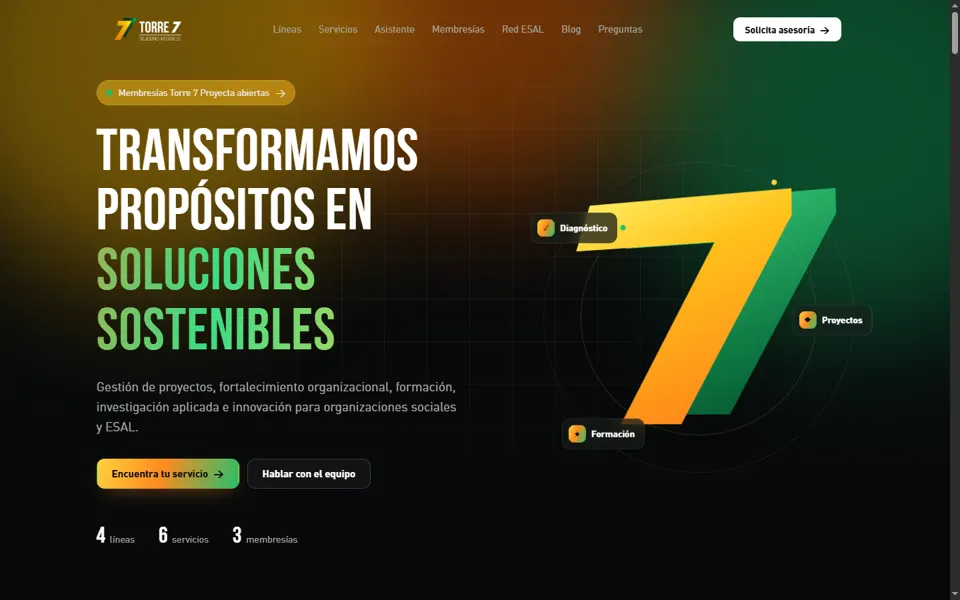
7 · Aurora (oscura)
Premium oscura: 7 en 3D, aurora animada, servicios en scroll horizontal y asistente tipo chat.
htdocs/torre7-aurora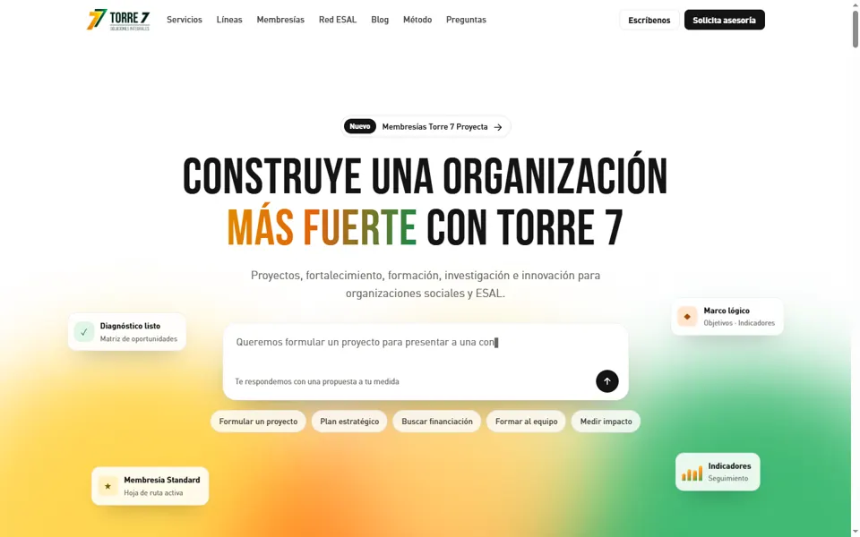
6 · Moderna Pro
Lovable / Envato mejorada: tarjetas flotantes, 3D, línea de tiempo, entregables y cierre.
htdocs/torre7-moderna-pro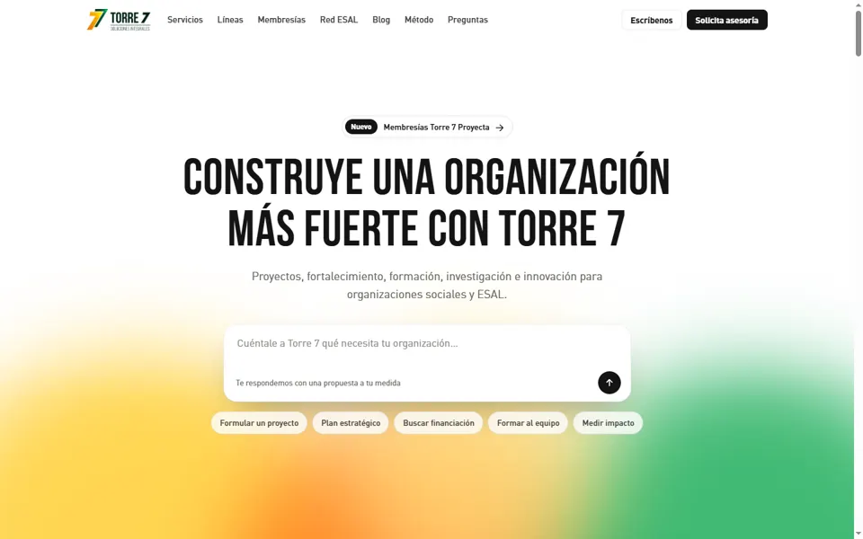
5 · Moderna
Inspirada en Lovable y plantillas de consultoría de Envato.
htdocs/torre7-moderna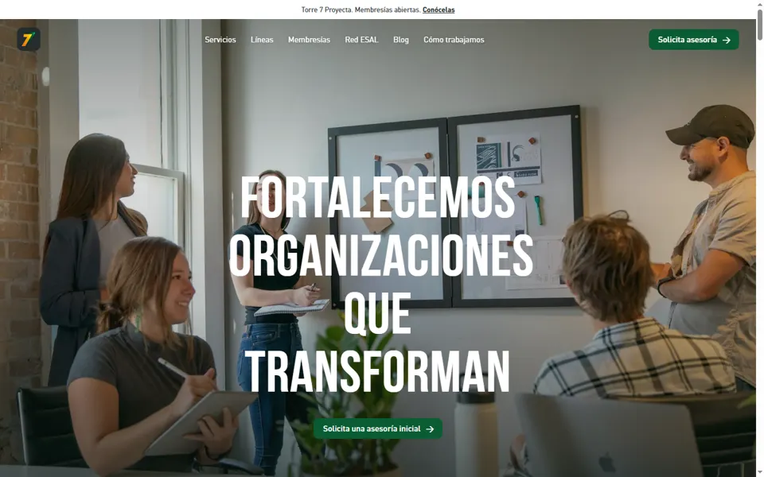
4 · Neko Health
Premium y limpia, foto que se encoge al bajar y pestañas.
htdocs/torre7-neko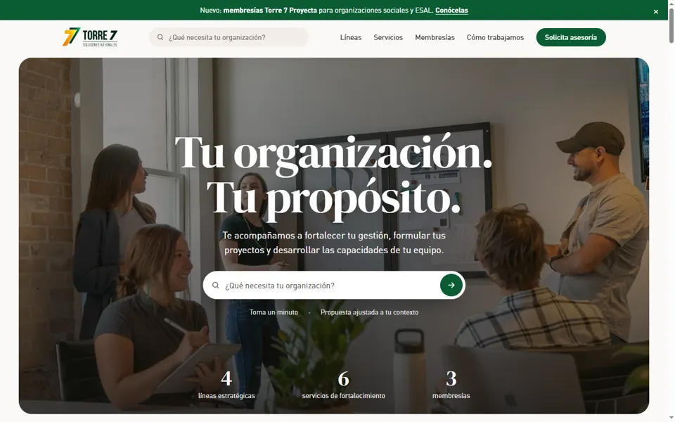
3 · Opendoor
Cálida y comercial, buscador en la portada y carrusel.
htdocs/torre7-opendoor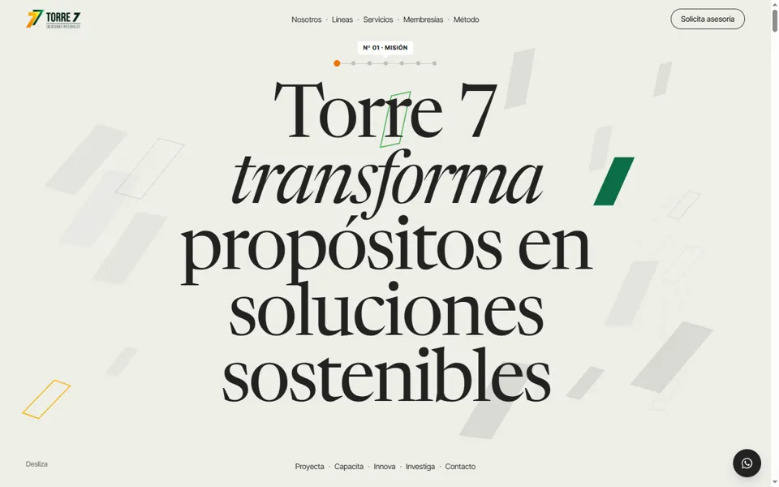
2 · Editorial (Trestle)
Minimalista con serifa y frases que cambian.
htdocs/torre7-editorial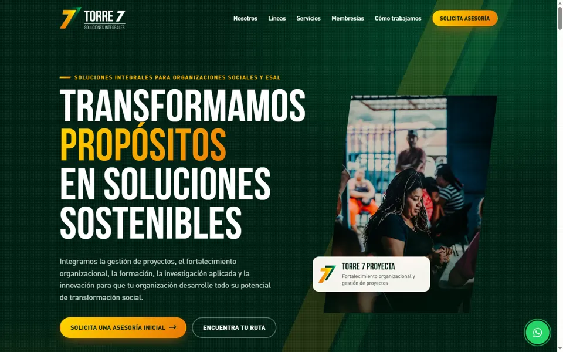
1 · Verde original
Primera versión con Bebas Neue, DIN Pro y colores del logo.
htdocs/torre7-verde